Prelude
This blog post is a long-form article based on a talk I delivered at the haskell.love conference on 10 Sept 2021. Keep an eye out here and I will update this section with a link to the recording of the talk when it’s available.
The original slides for this talk are available on github along with the complete source code for the examples used in this article and the talk.
An Introduction to Type-Level Programming
Type-level programming in haskell (and other languages that support it) can be quite useful from time to time, but I find that it’s something that a lot of people struggle with learning. In haskell specifically, I think learning how to use type-level programming appropriately can be quite hard because the best real-world examples of type-level programming often come from larger projects, and it can be hard to figure out how to grow the design of your own code to make use of type level programming effectively when you’re only seeing the end-state of projects that have already grown into type level programming.
Outside of real-world projects, there are some well written pieces that describe various aspects of type level programming, but few references that are both accessible to people first trying to dip their toes into the world of type level programming and which also address the various approaches you can take to programming with types holistically.
In this article you’ll learn how to build programs that make heavy use of type-level programming by working through building a theming system. I originally developed the ideas behind this talk and article when trying to write something to unify the various themes and configurations for my own xmonad desktop setup, but the theming system you’ll build as you work through this article can be equally applied to theming web content, desktop or command line applications, or really anything that needs configurable theming.
Building A Theming System at Runtime
Before we dive into building a theming system at the type-level, let’s look at a small example of what a runtime theming system might look like. Without any particular work, we might start by simply defining some records that collect information about the look and feel of various components in our system. For example, in an XMonad desktop configuration we might want to configure both the look and feel of the text we send to polybar.
polybarColorScheme = PolybarColorScheme
{ focusedWorkspaceText = "#dda0dd"
, focusedWorkspaceBackground = "#2a2035"
, visibleWorkspaceText = "#dda0dd"
, visibleWorkspaceBackground = "#2a2035"
}In this examples we’ve got a record with some fields and we’re setting them to strings that hold hex values. This approach is very low-effort and in a lot of cases it might be good enough, but if we wanted to be nit-picky we could note that using string values here introduces the problem that we could use invalid values and wouldn’t necessarily find out until runtime when things look wrong, or worse, crash. The first refactor that we might come up with is to try to use something other than strings to hold color data.
We can start by creating a new record, RGB that will hold each color channel. We’ll use Word8 since it’s limited to values from 0-255, which is exactly what we want if we want to represent things using the usual 24-bit colors that we’re used to seeing.
module Color where
import Data.Word
data RGB = RGB
{ rgbRed :: Word8
, rgbGreen :: Word8
, rgbBlue :: Word8
} deriving (Eq, Show)And we can refactor our original code to make use of our new type:
polybarColorScheme = PolybarColorScheme
{ focusedWorkspaceText = RGB 0xdd 0xa0 0xdd
, focusedWorkspaceBackground = RGB 0x2a 0x20 0x35
, visibleWorkspaceText = RGB 0xdd 0xa0 0xdd
, visibleWorkspaceBackground = RGB 0x2a 0x20 0x35
}Great! with one relatively small change, we’ve just eliminated a huge number of potential errors caused accidentally setting a color to some invalid string.
The Update Problem
We’ve fixed the issue of potentially using invalid color strings, but we have another problem. Imagine if we wanted to make the color of our text a little bit darker, or we wanted to change the look and feel of our theme to be uniformly a bit more blue. We need to track down and change every single place where we’re using a color, throughout the entire project, and update them. If you are anything like me, this will be the start of a long process of forgetting to update things here and there and only noticing days later when you realize something just doesn’t look right.
One way to address this is to use a color palette. In fact, when we think of theming, some variation of a color palette is usually what we have in mind. For our purposes, a color palette is just any sort of a mapping between names and colors.
The simplest way to define a color palette would be to just create a newtype wrapper around a Map. We’ll name ours ThemeInstance, since what we’re really talking about is to create some specific instance or implementation of our theme.
import qualified Data.Map.Strict as Map
newtype ThemeInstance = ThemeInstance { getThemeInstance :: Map.Map String RGB }Let’s look at an example of what it might look like to create a color palette and use it to define our polybar color scheme:
myTheme = ThemeInstance . Map.fromList $
[ ("foreground", RGB 0x3a 0x20 0x35)
, ("background", RGB 0xdd 0xa0 0xdd) ]
polybarColorScheme :: ThemeInstance -> Maybe PolybarColorScheme
polybarColorScheme (ThemeInstance theme) = PolybarColorScheme
<$> Map.lookup "foreground" theme
<*> Map.lookup "background" theme
<*> Map.lookup "foreground" theme
<*> Map.lookup "background" themeSupporting Multiple Color Types
So far we’ve only thought about supporting RGB colors. As far as defaults go this is a pretty good one, and if we were going to limit ourselves to a single way to represent a color RGB is probably the way to go. That said, it would be convenient to be able to support other representations of color as well. For example, if you are using this theming system for a desktop environment, it might be convenient to easily be able to refer to all of the the X11 colors by name, even though they will eventually be represented as RGB values.
One way that we can approach this is to create a new typeclass for colors that we can represent as an RGB color. Let’s make one and call it IsColor:
class IsColor a where
toRGB :: a -> RGBCreating an instance for RGB colors is pretty trivial:
instance IsColor RGB where
toRGB = idAnd if we wanted to define some types to represent our X11 colors, we can also do that pretty easily by hard-coding the RGB color associated with each of the named X11 colors:
data AliceBlue = AliceBlue
instance IsColor AliceBlue where
toRGB = const $ RGB 0xF0 0xF8 0xFF
-- many other colors omitted for brevityNow we have a bit of a problem though. We can write functions that work over anything that is a color:
toHex :: IsColor a => a -> String
toHex a =
let (RGB r g b) = toRGB a
in printf "%02x%02x%02x" r g bBut what about our ThemeInstance? One option would be to add a type parameter:
newtype ThemeInstance colorType = ThemeInstance
{ getThemeInstance :: Map.Map String colorType }If we did that, we’d run into two problems:
- Now, everywhere that we want to use
ThemeInstancewe need to add a constraintIsColor colorType => ThemeInstance colorType - We can’t mix and match different types of colors in a single theme.
Thankfully, we can solve both of those problems by creating an Existential Type. An Existential Type is a type that we can create to hold values of several different types that all implement a particular typeclass. Let’s create one called SomeColor to represent things that are some type of color:
data SomeColor = forall color. IsColor color => SomeColor colorAs a matter of convenience, let’s also add a Show instance for SomeColor:
instance Show SomeColor where
show = show . toRGBIf we refactor our ThemeInstance now, we can store all sorts of different colors in the same theme:
newtype ThemeInstance = ThemeInstance
{ getThemeInstance :: Map.Map String SomeColor }
t = ThemeInstance $
Map.insert "red" (SomeColor $ RGB 255 0 0)
(Map.singleton "blue" (SomeColor AliceBlue))You’ll notice here that we’ve had to explicitly wrap up all of our colors in a SomeColor constructor. If you find this to be too troublesome, you can easily create a wrapper to handle this for you:
someRGB :: Word8 -> Word8 -> Word8 -> SomeColor
someRGB r g b = SomeColor $ RGB r g bFinishing Up Our First Pass
The approach to theming that we’ve built so far has the nice benefit of letting us decouple the actual definitions of our colors from the logical description of what colors we might want to use, and it’s has the benefit of being pretty easy to work with.
Unfortunately, we also have a couple of problems: First, we’ve got the problem that our configuration might fail if we’re missing a color. Sure, we can handle it somewhat gracefully by returning Nothing if we fail to find a color that we need, but we’re still going to be left having to deal with it at some point. We can either crash, realize that we’ve gotten back no configuration and exit gracefully, or provide some hard-coded default theme. Second, it’s hard to avoid failure because it’s not clear without reading the source code what theme elements any particular function might want to use.
In the next section, we’ll look at how we can address both of these problems by moving some of our theming code into the type level.
Requiring Theme Elements at the Type Level
The first refactor we’ll make to our code will let us address the problem of understanding what particular parts of a theme any given function might use. It will also take us one step further along the path toward total type safety for our theming system.
Here’s what we’re going to aim for with these refactors:
- Let’s make sure that any function that uses a theme has a type that tells us what elements from the theme it’s using.
- Let’s make it a compile-time error to pass a theme to a function if the theme doesn’t provide the colors that the function needs.
Before we get into building this, we’ll start by taking a quick look at where we’d like to end up. This colorDemo function will print out a thruple of the red, green, and blue colors provided by our theme.
{-# LANGUAGE TypeApplications #-}
colorDemo
:: ( HasColor "red" theme
, HasColor "green" theme
, HasColor "blue" theme )
=> ThemeInstance theme -> String
colorDemo theme =
let r = lookupColor @"red" theme
g = lookupColor @"green" theme
b = lookupColor @"blue" theme
in show (r,g,b)In this demo you can see we’re calling lookupColor using a visible type application, which we’ve enabled using the TypeApplications extension. For each of the colors we’ve used a visible type application for, we’re also getting a HasColor constraint in the type signature telling us that we need that color to be a part of our theme instance. Importantly, although we’ve added the type signature here for the sake of readability, the compiler can also infer this type for us. Being able to infer the type is helpful because it means that we can get nicer type errors if we change something.
If you’re not familiar with visible type applications, this extension allows us to manually tell the compiler what type to use whenever we’re dealing with some polymorphic type. For example, consider the read function. read is polymorphic and it decides how to parse a string based on the type of value it’s expected to return. Often times we end up awkwardly using type annotations to tell the compiler what type we’d like it to use:
λ (read "1") :: Int
1
λ (read "1") :: Double
1.0With visible type applications we can pass the type we’d like to use directly to the function using an @ symbol. For example:
λ read @Int "1"
1
λ read @Double "1"
1.0When you’re writing your own functions to be used with type applications, it’s helpful to use forall to be explicit about your type variables, since the order of variables will determine the order of type applications. Let’s look at how this works in practice:
f :: forall b a. (Read a, Read b) => String -> (a,b)
f s = (read s, read s)
λ f @Int @Double "1"
(1.0,1)In this example b is getting the type Int, and a is getting the type Double.
We’ll be making heavy use of type applications throughout the rest of this article, as they are often the most ergonomic way to write code that makes heavy use of type-level programming.
Refactoring ThemeInstance
Now that we’ve seen a demo of where we’d like to end up, we’ll start making it a reality by looking at the ThemeInstance type that we’re passing into colorDemo. This version is a little different than the version we’ve already because we’ve added a type parameter to it. This new theme parameter will need to hold the information about what colors are available in our theme.
newtype ThemeInstance theme = ThemeInstance
{ getThemeInstance :: Map.Map String SomeColor }
deriving ShowHere we’ve added a new type parameter to keep track of what’s in our theme. It’s a Phantom Type, so we’re not actually using the type at runtime for anything. It exists purely to help us out at the type level.
As we’ve implemented it, theme right now can be any type at all. We could create values with type ThemeInstance Int or ThemeInstance Bool, or even ThemeInstance Either (Int,Bool) [(String, Maybe Int, Void -> a)] if we wanted to. It wouldn’t change our implementation, but it would allow us to create values with types that are semantically absurd.
Thankfully, we can limit the sort of types that we can use when creating a ThemeInstance by giving it a Kind Signature. To use kind signatures, we have to enable the KindSignatures extension. Once we’ve done that, we can use familiar syntax to annotate the Kind of a type variable.
{-# LANGUAGE KindSignatures #-}
newtype ThemeInstance (theme :: Theme) = ThemeInstance
{ getThemeInstance :: Map.Map String SomeColor }
deriving ShowOf course, we still need to define Theme. Before we do that though, let’s take a moment to look into Kinds in general and learn a little bit more about them.
A Brief Aside on Kinds and Type-Level Data Structures
Kinds in haskell are like the “types of types”. The normal types that we work with in everyday haskell code, like Int or a -> a all have the kind Type. Type constructors like Maybe have the kind Type -> Type. By default ghci will use * in place of Type, but for clarity in this article we’ll disable that by setting NoStarisType.
You can use ghci to look at the Kind of a Type with the :kind! command:
λ :set -XNoStarIsType
λ :kind! Int
Int :: Type
= Int
λ :kind! Maybe
Maybe :: Type -> Type
= Maybe
λ :kind! Either
Either :: Type -> Type -> Type
= Either
λ :kind! Either String
Either String :: Type -> Type
= Either StringThe extra ! we’re adding in :kind! asks ghci to give us not only the Kind of the Type, but also the “normalized type”. You’ll learn more about what that means later on in this article, but for now it’s helpful to just get in the practice of using the punctuation.
The syntax for creating kinds is the same as the syntax for creating new haskell types, and in fact we can reuse the same code to create both new types and kinds by enabling the DataKinds extension. Before we dive into creating a Theme kind, let’s look at a few other examples to get comfortable for what it means to create a new Kind.
We can start by looking at a simple example in ghci:
First, we’ll enable the DataKinds language extension, and create a new type named Example with a single constructor MakeExample. The names here are arbitrary, but if you are following along it’s a good idea to use a different name for the type and the constructor so that you’ll have an easier time following along with the output of the examples.
If we look at the type of MakeExample, as we’d expect it’s Example. This is just normal value level haskell code.
λ :set -XDataKinds
λ data Example = MakeExample
λ :t MakeExample
MakeExample :: ExampleSimilarly, if we look at the Kind of Example we’ll see that it’s a normal haskell Type (remember, in ghci you might see this written as *):
λ :kind Example
Example :: TypeWhere things will start to get a bit different is if you look at the Kind of MakeExample. When we do this, we’re no longer treating MakeExample as a constructor, but rather as a type all on it’s own
λ :kind MakeExample
MakeExample :: ExampleThis works because the DataKinds extension allows us to promote data types to the type-level. When we do this, the data type becomes a Kind, and all of the constructors become types with that Kind.
Let’s look at another example:
λ data ExampleColor = Red | Green | Blue
λ :kind! Red
Red :: ExampleColor
= 'Red
λ :kind! Green
Green :: ExampleColor
= 'Green
λ :kind! Blue
Blue :: ExampleColor
= 'BlueHere we’re creating a sum type with constructors Red, Green and Blue, but thanks to DataKinds we’re also creating a new Kind with types Red, Green and Blue. You’ll notice in this example when we look at the Kind of these types, they are prefixed with a tick mark: 'Blue. This is a way that we can differentiate between the value-level and type-level versions of things. For example, here Blue would be a value with the Type ExampleColor, but 'Blue would be a type with the Kind ExampleColor. The tick marks are only required if it would otherwise be ambiguous whether you were talking about the value or type level. Since we are primarily working in the type level in this article we’ll omit the ticks, but it’s a good idea to add them in most situations to avoid unnecessary ambiguity.
We can see the types and kinds we’re dealing with in action by creating a typeclass. Let’s create a simple typeclass that will let us get the name of a color:
class ExampleClass (color :: ExampleColor) where
sayColor :: StringWe’re using a kind signature here to ensure that color must have the kind ExampleColor, so we can crate instances for Red, Green, and Blue as we’d expect:
instance ExampleClass Red where
sayColor = "red"
instance ExampleClass Green where
sayColor = "green"
instance ExampleClass Blue where
sayColor = "blue"
λ (sayColor @Red, sayColor @Green, sayColor @Blue)
("red","green","blue")If we try to create an instance for some other type, we’ll get an error:
instance ExampleClass Int where
sayColor = "int"
<interactive>:56:23: error:
• Expected kind ‘ExampleColor’, but ‘Int’ has kind ‘Type’
• In the first argument of ‘ExampleClass’, namely ‘Int’
In the instance declaration for ‘ExampleClass Int’One of the really powerful features of using DataKinds is that you aren’t limited to simple sum types, we can also promote data structures to the type level. For example, we can create a type level list. For example:
data List a = Empty | Cons a (List a)
λ :kind! Cons Red (Cons Green (Cons Blue Empty))
Cons Red (Cons Green (Cons Blue Empty)) :: List ExampleColor
= 'Cons 'Red ('Cons 'Green ('Cons 'Blue 'Empty))We can even use infix type level operators if we’d like:
type a :+: b = Cons a b
infixr 6 :+:
λ :kind! Red :+: Green :+: Blue :+: Empty
Red :+: Green :+: Blue :+: Empty :: List ExampleColor
= 'Red :+: ('Green :+: ('Blue :+: 'Empty))Of course, we don’t have to define everything ourselves from scratch. There are several Kinds that are available to us by default or from the GHC.TypeLits module included in base. Let’s import GHC.TypeLits and explore some of the built-in capabilities we get
Type-Level Naturals
The Nat kind defines type-level natural numbers. We can use any positive numeric literal as a type that will have the kind Nat. For example:
λ :kind! 1
1 :: Nat
= 1We can also perform some basic arithmetic at the type level:
λ :kind! 16 + 4
16 + 4 :: Nat
= 20
λ :kind! 16 `Div` 4
16 `Div` 4 :: Nat
= 4
λ :kind! 16 * 4
16 * 4 :: Nat
= 64
λ :kind! 16 - 4
16 - 4 :: Nat
= 12And we can compare to see if one natural is less than, or equal to, another:
(1 <=? 2) :: Bool
= 'True
λ :kind! (4 <=? 2)
(4 <=? 2) :: Bool
= 'FalseFinally, the natVal function gives us a way to get a runtime value-level equivalent to a type-level natural.
λ :t natVal $ Proxy @(8 * 16)
natVal $ Proxy @(8 * 16) :: Integer
λ natVal $ Proxy @(8 * 16)
128If you’re not familiar with it, the Proxy type is a simple data type that comes from the Data.Proxy module in base. It makes use of phantom types to let us carry around type information with no runtime overhead. You can use Proxy as we’ve done here with a type application, or you can use it with a more traditional type annotation:
λ natVal (Proxy :: Proxy (1 + 2))
3Type-Level Symbols
The Symbol kind defines type-level strings, similar to how Nat defines type-level numbers. Not as many value-level operations on strings carry over to the type level as did for numbers, but you can append symbols together and make use of SymbolVal to get a string representation of a type-level Symbol:
λ :kind! "Hello, World"
"Hello, World" :: Symbol
= "Hello, World"
λ :kind! "Hello, " `AppendSymbol` "World"
"Hello, " `AppendSymbol` "World" :: Symbol
= "Hello, World"
λ symbolVal $ Proxy @"Hello, World"
"Hello, World"
λ :t symbolVal $ Proxy @"Hello, World"
symbolVal $ Proxy @"Hello, World" :: StringType-Level Lists
Finally, ghc provides us type-level lists. These work like the List kind that we’ve already built, but allows you to use the same syntax you’re already familiar with to construct lists at the type level.
λ :kind! [1,2,3]
[1,2,3] :: [Nat]
= '[1, 2, 3]
λ :kind! ["Hello","World","!"]
["Hello","World","!"] :: [Symbol]
= '["Hello", "World", "!"]Working With a Theme
Now that you understand a bit more about type-level data structures and Kinds, we can move on and define our Theme kind as a type-level list collection of theme elements. Since we want to support arbitrary theme elements by name, we’ll use Symbol to represent individual theme elements:
type Theme = [Symbol]Now that we’ve defined Theme we can create a ThemeInstance with some colors:
λ theme = ThemeInstance @'["red"] $ Map.singleton "red" (someRGB 255 0 0)
λ :t theme
theme :: ThemeInstance DemoTheme
λ theme
ThemeInstance {
getThemeInstance =
fromList [( "red"
, RGB {rgbRed = 255, rgbGreen = 0, rgbBlue = 0})]
}Of course, being able to create a ThemeInstance with a specified theme doesn’t help us until we can actually use that information to safely to a value.
If you recall earlier in this article we had a short demo of how we’d like to use our theme:
colorDemo
:: ( HasColor "red" theme
, HasColor "green" theme
, HasColor "blue" theme )
=> ThemeInstance theme -> String
colorDemo theme =
let r = lookupColor @"red" theme
g = lookupColor @"green" theme
b = lookupColor @"blue" theme
in show (r,g,b)Now that we have a ThemeInstance value and have defined the Theme kind, the next step we’ll need to take get a color while ensuring that our theme has the right set of colors. We’re calling lookupColor to get the color values, so let’s start there.
The type for lookupColor is:
lookupColor
:: forall colorName theme.
( KnownSymbol colorName
, HasColor colorName theme)
=> ThemeInstance theme -> RGBWe have two constraints here that we’ll want to look at. Let’s start with the easy one first: KnownSymbol colorName. This is a constraint that says colorName needs to be a Symbol. The second constraint, HasColor colorName theme might look familiar from the type signature of colorDemo. This is a typeclass that we’ll define to ensure that a given theme has the desired color.
Before we get back to lookupColor let’s implement HasColor. The first thing we’ll need to do is enable MultiParamTypeClasses:
{-# LANGUAGE MultiParamTypeClasses #-}Since we’re only validating that the theme holds a color at the type level, we don’t need to add any functions to the typeclass.
class HasColor (color :: Symbol) (theme :: Theme)So, how do we use this typeclass to prove that our theme has the desired color? By making sure that we only define instances of the typeclass where our desired constraint holds. Thankfully, we can use many of the same techniques to do this at the type level as we would at the value level. In particular, we’ll use inductive reasoning and pattern matching.
Let’s start by thinking about how we could implement a value-level equivalent to our typeclass. That will give us a good starting point that we can translate to the type level.
A value level function might have the type:
findColor :: String -> [String] -> BoolWe can define two base cases for this function. One where we searched the entire list and didn’t find a match:
findColor _ [] = FalseAnd another where we have found the element:
findColor color (currentColor:colors)
| color == currentColor = TrueFinally, we can define a recursive case where we haven’t found the color yet, but we still have items we can search through in our list:
findColor color (currentColor:colors)
| color == currentColor = True
| otherwise = findColor color colorsWhen we’re writing our HasColor instance, we’re going to apply similar logic, but with a couple of differences. The most notable difference is that we don’t ever directly return True or False. Instead, we’ve either defined a particular instance, in which case the constraint holds, or we haven’t defined that instance and we’ll get a compile-time error.
So, how do we apply this to the type level? We’ll start again with our base case. Since we won’t be creating any instance for cases where we don’t have a match, we can skip the base-case where we would have returned false on an empty list, and move on to the case where we found the color in the list.
The first thing we’ll need to do is to get the head of our theme list. To do that we’ll need to add a couple more extensions. First, we’ll need FlexibleInstances so that we can use a type-level list in an instance declaration. Second, we’ll need TypeOperators so that we can use : at the type level, allowing us to pattern match and get the head of our theme list.
With all of our extensions enabled, we’ll end up with something like this:
{-# LANGUAGE DataKinds #-}
{-# LANGUAGE KindSignatures #-}
{-# LANGUAGE MultiParamTypeClasses #-}
{-# LANGUAGE TypeOperators #-}
{-# LANGUAGE FlexibleInstances #-}
module Color where
import GHC.TypeLits
type Theme = [Symbol]
class HasColor (color :: Symbol) (theme :: Theme)
instance (color ~ current) => HasColor color (current : rest)The important bit here is our instance declaration:
instance (color ~ current) => HasColor color (current : rest)We’re using an equality constraint, (color ~ current), to make sure that the color argument to our typeclass matches the head of the theme list. We’re getting the head of the list by pattern matching, just like we’d do at the value level.
Before we move on to the recursive case, let’s take one more pass at our existing instance. There’s a minor refactor that we can do here that illustrates one of the other big differences between type-level programming and value-level programming: If we refer to the same variable multiple times in a typeclass instance, we are requiring that they be equal. That means that we can skip the equality constraint altogether and simply write:
instance HasColor color (color : rest)Now that we’ve defined our base-case, let’s look at the recursive case. In plain English, our recursive instance needs to say “If the tail of the theme list has the color you are looking for, then the entire list has the color you are looking for”. In haskell that is:
instance HasColor color rest => HasColor color (color' : rest)That’s it! We’ve defined instances for both of the cases where our color is available in our theme list, and we can leave it up to the compiler to prove that it’s true in any particular circumstance.
To see our handiwork, let’s write a small test function to see how the compiler can enforce our constraints for us:
testFunction :: HasColor color theme => ()
testFunction = ()Unfortunately, this doesn’t compile! If you try to load your module up in ghci you’ll see that our function is failing due to am ambiguity check.
HasColorDemo.hs:17:17: error:
• Could not deduce (HasColor color0 theme0)
from the context: HasColor color theme
bound by the type signature for:
testFunction :: forall (color :: Symbol) (theme :: Theme).
HasColor color theme =>
()
at HasColorDemo.hs:17:17-42
The type variables ‘color0’, ‘theme0’ are ambiguous
• In the ambiguity check for ‘testFunction’
To defer the ambiguity check to use sites, enable AllowAmbiguousTypes
In the type signature: testFunction :: HasColor color theme => ()
|
17 | testFunction :: HasColor color theme => ()
| ^^^^^^^^^^^^^^^^^^^^^^^^^^
Failed, no modules loaded.This is another common problem you will encounter when dealing with type-level programming. The problem is that because we’re not actually using the color and theme type variables anywhere except inside of our constraint, ghc finds them to be ambiguous. We can get around this safely by turning on AllowAmbiguousTypes.
{-# LANGUAGE AllowAmbiguousTypes #-}Okay, back to the testing. If we load this up in ghci and now it will compile. When we give it a test we’ll see…
λ testFunction @"red" @'["red"]
<interactive>:23:1: error:
• Overlapping instances for HasColor "red" '["red"]
arising from a use of ‘testFunction’
Matching instances:
instance [safe] HasColor color colors =>
HasColor color (color' : colors)
-- Defined at HasColorDemo.hs:13:10
instance [safe] HasColor color (color : colors)
-- Defined at HasColorDemo.hs:12:10
• In the expression: testFunction @"red" @'["red"]
In an equation for ‘it’: it = testFunction @"red" @'["red"]Well that’s not what we wanted!
What’s happening here is that we’re taking for granted some information that the compiler can’t make use of. As you’ve learned, whenever we use the same type variable multiple times in an instance declaration we telling the compiler that those two types have to be the same. The problem here is that we can’t make the opposite assumption. In our recursive instance:
instance HasColor color rest => HasColor color (color' : rest)The two type variables color and color' don’t have to be the same, but they might be. In the case that they are the same, the compiler doesn’t know which instance it should use, and so it gives us an error.
We can fix this by telling the compiler which instance it should prefer by adding in an Overlappable or Overlapping annotation to our typeclass instance. For now, we’ll add it to our recursive instance:
instance {-# OVERLAPPABLE #-}
HasColor color colors => HasColor color (color':colors)With this annotation in place, we’re telling the compiler “hey, whenever there are two instances that might work, pick the other one”.
Now that we’ve told ghc how to handle the overlapping instances, let’s give our test function another try:
λ testFunction @"red" @'["red"]
()
λ testFunction @"red" @'["blue"]
<interactive>:5:1: error:
• No instance for (HasColor "red" '[])
arising from a use of ‘testFunction’
• In the expression: testFunction @"red" @'["blue"]
In an equation for ‘it’: it = testFunction @"red" @'["blue"]Finally! The return value of () here is not very exciting, but we can now see for ourselves how HasColor has helped us to ensure that we can only compile our function when we’re asking for a color that’s a member of the theme we’re passing in.
Now that you’ve learned how to build HasColor let’s return to lookupColor and see if we can implement it.
Implementing lookupColor
If you recall from earlier in this article, we said that the type of lookupColor was:
lookupColor
:: forall colorName theme.
( KnownSymbol colorName
, HasColor colorName theme)
=> ThemeInstance theme -> RGBNow that you understand both KnownSymbol and HasColor you might already have an intuition for how to implement this function: we’ll start by using symbolVal to get the color name, which will be the key to our theme map. Then we’ll get that element from our map. Since our goal is to ensure that we have all of the necessary elements of our theme map at compile time, we shouldn’t need to use a safe lookup function. The unsafe function Map.! ought to work for us.
Here’s the full implementation:
lookupColor
:: forall colorName theme.
( KnownSymbol colorName
, HasColor colorName theme)
=> ThemeInstance theme -> RGB
lookupColor (ThemeInstance colors) =
let
targetName = symbolVal $ Proxy @colorName
in toRGB $ colors Map.! targetNameA Lookup Color Demo
Now that we’ve defined lookupColor let’s test it out with a few calls in ghci.
λ type DemoTheme = '["red", "green", "blue"]
λ :{
*ThemeExample| theme = ThemeInstance @DemoTheme $ Map.fromList
*ThemeExample| [ ("red", someRGB 255 0 0)
*ThemeExample| , ("green", someRGB 0 255 0)
*ThemeExample| , ("blue", someRGB 0 0 255) ]
*ThemeExample| :}
λ lookupColor @"red" theme
RGB {rgbRed = 255, rgbGreen = 0, rgbBlue = 0}
λ lookupColor @"green" theme
RGB {rgbRed = 0, rgbGreen = 255, rgbBlue = 0}
λ lookupColor @"blue" theme
RGB {rgbRed = 0, rgbGreen = 0, rgbBlue = 255}
λ lookupColor @"yellow" theme
<interactive>:19:1: error:
• No instance for (HasColor "yellow" '[])
arising from a use of ‘lookupColor’
• In the expression: lookupColor @"yellow" theme
In an equation for ‘it’: it = lookupColor @"yellow" themeSo far, so good. We’ve created a new theme and gotten values out of it, and we’ve even prevented a runtime error by failing at compile time when we tried to get a missing color out of the theme.
There’s still a problem though. Let’s look at another variation of our example:
λ theme = ThemeInstance @DemoTheme Map.empty
λ lookupColor @"red" theme
*** Exception: Map.!: given key is not an element in the map
CallStack (from HasCallStack):
error, called at
libraries/containers/containers/src/Data/Map/Internal.hs:627:17 in
containers-0.6.2.1:Data.Map.InternalOh no! In spite of all of our effort, we’ve still hit a runtime error. In the next section we’ll refactor our code a bit and you’ll learn how to avoid this pitfall.
Constructing A Theme Instance At The Type Level
In the last section, we saw that we have an error lurking in our current implementation of our type-level theming code. The problem is that we don’t have any way of ensuring that the contents of the map that we’re using to store our theme data actually matches what the type says it should be.
Let’s consider an alternate approach. Right now we define a Theme at the type level independently of adding colors to the runtime theme. What if, instead, we refactored our code so that each time we added a color value to the theme, it added that same color to the theme’s type. Even better, what if that was the only way to add colors to the theme type. That would ensure that the type of our theme instance always precisely matched the colors it actually has available.
A Simple GADT Approach To Constructive Theme Building
GADTs are an extremely versatile tool that we can use for constructing values and types in haskell. They greatly extend what we can accomplish with value constructors by allowing us to easily add constraints to the parameters of a value constructor, as well as giving us the ability to create constructors that specify the full type that they return.
Before we jump into using a GADT for theming, let’s look at a smaller example just to get a feel for them. Imagine we want to create a value that can hold any one of an Int, a String, or a Bool.
We can already do this with normal sum types:
data SomeValue = SomeInt Int | SomeString String | SomeBool BoolThe problem here is that our SomeType value doesn’t carry any information about what constructor we used. Any function that were going to work with any of those branches would end up having to work with all of them. For example, we might want to write a function like:
notSomeValue :: SomeValue -> SomeValue
notSomeValue val =
case val of
SomeInt _ -> val
SomeString _ -> val
SomeBool b -> SomeBool (not b)With GADTs we can add some additional information at the type level. Let’s start by recreating exactly what we had before using GADT syntax:
{-# LANGUAGE GADTs #-}
data SomeValue' where
SomeInt' :: Int -> SomeValue'
SomeString' :: String -> SomeValue'
SomeBool' :: Bool -> SomeValue'The syntax here might look a little strange at first. Instead of the normal constructors we’re accustomed to, we have a where clause and what looks like a set of functions with type annotations. In some ways, the GADT syntax looks more like the syntax for a typeclass than for a normal algebraic datatype.
Once you get past the initial strangeness of the new syntax though, we can see that it’s not actually all that different from what we’ve already been doing. After all, if we look up the type of our SomeValue constructors in ghci we’ll see type signatures that look just like the ones we’ve written:
λ :t SomeInt
SomeInt :: Int -> SomeValue
λ :t SomeInt'
SomeInt' :: Int -> SomeValue'
λ :t SomeString
SomeString :: String -> SomeValue
λ :t SomeString'
SomeString' :: String -> SomeValue'GADTs can do more than just offer a different syntax for defining types though. Since we’re writing out the type annotation for each of the constructors ourselves, we have access to much more power from the type system than we’d have when writing constructors the usual way. For example, we can easily have polymorphic constructors with typeclass constraints. Imagine if we wanted a field that supported any number. With traditional data types, we’d need to create an existential type to hold the number, but we can do it directly with GADTs:
SomeNumber :: Num a => a -> SomeValue'Another key feature of GADTs is the fact that each constructor can have a unique return type. To demonstrate this, we’ll need to add a type parameter to our example. Let’s rewrite our original SomeValue type to use a GADT, and add a type parameter to it
data SomeValue t whereIn a traditional haskell data type, t would have to be independent of any particular type constructor. With a GADT though, we can control the type of each of the constructors, and so we can specialize t depending on which constructor is called. For example, we can set t to Int, String, or Bool depending on the constructor that’s called to generate SomeValue:
SomeInt :: Int -> SomeValue Int
SomeString :: String -> SomeValue String
SomeBool :: Bool -> SomeValue BoolThe benefit here is that having this information available at the type level let’s us write much nicer code when we only want to work with a single constructor. We can rewrite notSomeValue now to only handle cases where we know we have a boolean value:
notSomeValue :: SomeValue Bool -> SomeValue Bool
notSomeValue (SomeBool b) = SomeBool (not b)Unlike or original version, we no longer need to match against all of the different SomeValue constructors- the fact that we’re restricting our input to SomeValue Bool is enough to convince both us, and the compiler, that we’ve exhaustively handled all of the cases.
You might be wondering how this can help us construct a type-safe theme. Let’s take a look by creating a new GADT called MakeSimpleTheme that will allow us to construct a simple but more type-safe theme.
We’ll start by defining the type. We’ll add a parameter to keep track of the current them:
data MakeSimpleTheme (theme :: Theme) whereNext, we’ll add a constructor that will allow us to create a new empty theme. Just like when we were writing HasColor, an empty theme is an empty type-level list, so our constructor is:
SimpleNewTheme :: MakeSimpleTheme '[]Finally, we’ll create a recursive constructor. This will be the part that will let us build up the type that we want in our theme.
SimpleAddColor :: (KnownSymbol colorName)
=> SomeColor
-> MakeSimpleTheme theme
-> MakeSimpleTheme (colorName : theme)In this example we’re using GADT’s ability to both include typeclass constraints and the ability to specialize the return type of a constructor so that we can ensure that each call to SimpleAddColor will result in an MakeSimpleTheme value with the new color name added into the list of colors that we’re tracking. Essentially, we’re constructing a type and value level list at the same time with a single call!
Let’s test this out: We’ll start by creating a simple theme demo. Note that we’re not adding an explicit type signature here- it will be generated for us because of the way that we’re creating our MakeSimpleTheme value.
data MakeSimpleTheme (theme :: Theme) where
SimpleNewTheme :: MakeSimpleTheme '[]
SimpleAddColor :: (KnownSymbol colorName)
=> SomeColor
-> MakeSimpleTheme theme
-> MakeSimpleTheme (colorName : theme)
simpleDemo =
SimpleAddColor @"red" (someRGB 255 0 0)
( SimpleAddColor @"green" (someRGB 0 255 0)
( SimpleAddColor @"blue" (someRGB 0 0 255) SimpleNewTheme))And indeed, if we look at the type of simpleDemo in ghci, we see that it has exactly the colors that we expect.
λ :t simpleDemo
simpleDemo :: MakeSimpleTheme '["red", "green", "blue"]Creating A Theme Instance From MakeSimpleTheme
Having a MakeSimpleTheme value with the correct types is a useful first step, but it doesn’t quite get us all the way to being able to theme things. The code we’ve written so far assumes that we’re working with ThemeInstance values. We could rewrite that code to work with MakeSimpleTheme, but that would break backwards compatibility and might require that we rewrite a bunch of code that’s already been tested and is working. Instead let’s add a new feature to support safer theming by creating a way to convert a MakeSimpleTheme into a ThemeInstance with an appropriate type.
We want to write some runtime code to generate a ThemeInstance based on the particular type of our MakeSimpleTheme, and so like most of the other problems we’ve encountered so far in this article, we’ll want to start thinking about writing a typeclass.
We’ll call this one ToThemeInstance and it will give us a way to convert some types into a ThemeInstance value.
class ToThemeInstance (a :: Theme -> Type) (t :: Theme) where
toThemeInstance :: a t -> ThemeInstance tOur typeclass has two parameters- first a type constructor that wants to take a Theme, and second the Theme that we’re working with. The type of our toThemeInstance function ensures that the theme being used by our input type matches the ThemeInstance being generated at each step.
As usual, our base-case is pretty straightforward. When our theme is empty, we can construct an empty theme instance using an empty map.
instance ToThemeInstance MakeSimpleTheme '[] where
toThemeInstance SimpleNewTheme = ThemeInstance Map.emptyOur recursive instance looks very similar to code we’ve seen already- in fact it seems to have elements of both HasColor and lookupColor. Like HasColor and most other recursive typeclass instances, we handle recursion at the instance level with a typeclass constraint. We’re also pattern matching to get the head of our theme list like we did in HasColor:
instance
(ToThemeInstance MakeSimpleTheme colors) =>
ToThemeInstance MakeSimpleTheme (color:colors)
whereThe implementation of toThemeInstance might bring to mind lookupColor. We’re going to again make use of symbolVal to generate a key for the current color in our theme map. The difference here is that instead of extracting the value, we’re going to insert it:
instance
(ToThemeInstance MakeSimpleTheme colors) =>
ToThemeInstance MakeSimpleTheme (color:colors)
where
toThemeInstance (SimpleAddColor rgb rest) =
let (ThemeInstance m) = toThemeInstance rest
colorName = symbolVal $ Proxy @color
in ThemeInstance (Map.insert colorName rgb m)That’s it! We can now freely create a runtime ThemeInstance with the correct elements and theme type by constructively creating a MakeSimpleTheme. Let’s take a look at a demo by converting simpleDemo into a ThemeInstance:
λ :t toThemeInstance simpleDemo
toThemeInstance simpleDemo
:: ThemeInstance '["red", "green", "blue"]
λ toThemeInstance simpleDemo
ThemeInstance {
getThemeInstance =
fromList [ ( "blue"
, RGB { rgbRed = 0
, rgbGreen = 0
, rgbBlue = 255
}
)
, ( "green"
, RGB { rgbRed = 0
, rgbGreen = 255
, rgbBlue = 0
}
)
, ( "red"
, RGB { rgbRed = 255
, rgbGreen = 0
, rgbBlue = 0
}
)
]
}Although it’s minor compared to the earlier problems we’ve had of potential runtime failures, there still a bit of a problem with our current implementation.
When we construct a theme using MakeSimpleTheme we’re assigning the colors at the time that we create the theme. In some circumstances this is fine, but for cases like the X11 colors, we might want to make use of existing names that are already provided for some particular colors. In the next section, we’ll explore how we can support this carrying the name and color value information around in the same type.
Colors at the Type Level
Up until now, we’ve been treating the type level and runtime representations of colors quite differently. At the runtime level we’re using SomeColor which will let us store something that we can turn into an RGB value, whereas at the type level we’re storing a list of color names as Symbol types. In general, it would be good if we could just have a single representation of colors, rather than two separate representations.
For reasons you’ll see in the next section, we’ll keep ThemeInstance as it is, and instead focus our efforts on refactoring MakeSimpleTheme. Before we can refactor our theme builder though, we need to figure out how we might want to represent colors at the type level.
In fact, we’re already part of the way there. If you recall earlier in this article we started defining some X11 colors:
data AliceBlue = AliceBlue
instance IsColor AliceBlue where
toRGB = const $ RGB 0xF0 0xF8 0xFF
data Plum = Plum
instance IsColor Plum where
toRGB = const $ RGB 0xDD 0xA0 0xDD
data RebeccaPurple = RebeccaPurple
instance IsColor RebeccaPurple where
toRGB = const $ RGB 0x66 0x33 0x99
-- many other colors omitted for brevityThese colors are already defined at the type level. No work to do, but it does give us a clue for how we might approach a type-level RGB color.
Type-Level RGB
Our X11 colors were each standalone types, but we made them viable colors by giving creating an instance of IsColor for each of them. We can take the same approach for RGB colors. Unfortunately, we can’t use DataKinds to get an RGB color at the type level automatically, so we’ll need to define a new type. We’ll call it RGBTypeLevel to help avoid confusion with the runtime RGB type.
We want to have each potential RGB color be it’s own distinct type. The easiest way to do that is to add type parameters for each color channel. Since we’re dealing with numbers, we’ll make sure those types are of Kind Nat:
data RGBTypeLevel (r :: Nat) (g :: Nat) (b :: Nat) = RGBTypeLevelNow we can easily create a new RGB value at the type level by saying:
λ typeLevelRed = RGBTypeLevel @255 @0 @0or
λ typeLevelGreen = RGBTypeLevel @0 @255 @0or even…
λ typeLevelBlue = RGBTypeLevel @0 @0 @999Wait- that’s not right! Each channel of our RGB color should be a number between 0 and 255. We better take care of that. At first we might think to try a GADT here so that we can limit the values:
data RGBTypeLevel (r :: Nat) (g :: Nat) (b :: Nat) where
RGBTypeLevel :: (r <= 255, g <= 255, b <= 255) => RGBTypeLevel r g bThe <= constraint here comes from GHC.TypeLits and is similar to the <=? function that you saw earlier when you were learning about Nat, but it works as a constraint rather than returning a Bool.
Using a GADT with constraints to ensure the values aren’t greater than 255 will work in a lot of cases- we can’t create a value with an invalid type anymore:
λ typeLevelBlue = RGBTypeLevel' @0 @0 @999
<interactive>:127:17: error:
• Couldn't match type ‘'False’ with ‘'True’
arising from a use of ‘RGBTypeLevel'’
• In the expression: RGBTypeLevel' @0 @0 @999
In an equation for ‘typeLevelBlue’:
typeLevelBlue = RGBTypeLevel' @0 @0 @999However, we aren’t entirely protected. When we’re working at the type level, we need to also consider situations where a user might be working with the type without ever trying to create an instance of it. Imagine a typeclass called GetColor that gets a runtime representation of the color:
class GetColor a where getColor :: StringWe might create an instance for RGBTypeLevel that seems well behaved:
instance (KnownNat r, KnownNat g, KnownNat b) =>
GetColor (RGBTypeLevel r g b)
where
getColor = show $ ( natVal $ Proxy @r
, natVal $ Proxy @g
, natVal $ Proxy @b)Unfortunately, a user could still use this instance to get back a value that can’t be a proper RGB color. Let’s look at an example:
λ getColor @(RGBTypeLevel 0 0 1000)
"(0,0,1000)"The problem here is that constraints on a GADT only apply when we’re constructing a value. When we’re using type applications we’re never directly constructing a value so the constraints are never checked.
Of course, we could simply move the constraint that a color channel be less than 256 into our typeclass:
instance (KnownNat r, KnownNat g, KnownNat b, r <= 255, g <= 255, b <= 255) =>
GetColor (RGBTypeLevel r g b)
where
getColor = show $ ( natVal $ Proxy @r
, natVal $ Proxy @g
, natVal $ Proxy @b)This does exactly what we want, preventing our users from accidentally trying to use an RGB color with values that are out of bounds.
λ getColor @(RGBTypeLevel 0 0 1000)
<interactive>:143:1: error:
• Couldn't match type ‘'False’ with ‘'True’
arising from a use of ‘getColor’
• In the expression: getColor @(RGBTypeLevel 0 0 1000)
In an equation for ‘it’: it = getColor @(RGBTypeLevel 0 0 1000)Unfortunately, it’s also extremely verbose. It wouldn’t be so bad if we only needed to add the constraints to a single instance, but we’ll need to apply this set of constraints anywhere that we use a typelevel RGB color.
Luckily for us, there’s a ghc extension for that. The ConstraintKinds extension allows us to treat constraints as their own Kind. This makes it convenient to create aliases for long typeclass constraints that we can reuse.
Let’s enable ConstraintKinds and then create a constraint that ensures we have some valid RGB color channels:
type ValidRGB r g b =
( KnownNat r, r <= 255
, KnownNat g, g <= 255
, KnownNat b, b <= 255)Now we can refactor our code to make use of this constraint to use our new constraint like any other:
instance ValidRGB r g b => GetColor (RGBTypeLevel r g b) where
getColor =
show $ (natVal $ Proxy @r, natVal $ Proxy @g, natVal $ Proxy @b)Much better! We’ve now saved ourselves a lot of typing, made the code easier to follow, and make our constraints reusable. And since we’re going to be reusing our constraint everywhere anyway, we can revert to our simpler type definition:
data RGBTypeLevel (r :: Nat) (g :: Nat) (b :: Nat) = RGBTypeLevelAnd finally, now that we can create a type-level RGB value and ensure that it fits within the bounds of an 8-bit word, we can create an instance of IsColor for any of our (valid) RGB values:
instance ValidRGB r g b => IsColor (RGBTypeLevel r g b) where
toRGB = const $ RGB (natWord8 @r) (natWord8 @g) (natWord8 @b)
where
natWord8 :: forall n. (KnownNat n, n <= 255) => Word8
natWord8 = fromIntegral $ natVal (Proxy @n)Naming Things
Now that we have a way to represent colors at the type-level, it would be nice if we could move away from having the color names and color values exist as completely separate things. We should have a way of defining colors that have their own name information associated with them.
What we’d like to do is to have a type-level function from the type of a given color to a Symbol representing the color’s name. Let’s call our function ColorName.
But what exactly is a type-level function? A plain haskell function is a function from a value to a value. We can think of a typeclass as a function from a type to a value (generally a function from a type to one or more value-level functions values). We can even think of GADTs as a function from a value (the type constructor) to a type. The last piece of our puzzle then, are Type Families, which we can think of as functions from types to other types.

Type families are type-level functions from one type to another type. They come in three different varieties:
- Open type families are similar to type classes. You can define an open type family and then add as many instances to it as you want. We won’t use these in this article.
- Closed type families are fixed mappings from one set of types to another. If you want to add or change a mapping, you need to edit the type family. You’ll use these later on in this section.
- Associated type families are open type families that are associated with a particular typeclass. You’ll be using these soon.
So, ColorName will be a type family that will map some sort of color to a Symbol. We could do this with an open type family, but then we couldn’t guarantee that ColorName always worked with something that is a color. More importantly in the case of RGBTypeLevel, we can’t use constraints when we’re defining type families, so we’d have to do a lot of extra work to prevent us from trying to get the name of an invalid color.
We also don’t want to use a closed type family, because we don’t want to limit ourselves to a predefined set of colors. That means we’ll be using an associated type family.
Associated type families are associated with a type class, so to create one we first need to have a typeclass. One option we have is to add an associated type family into our IsColor class. If we did that, we’d need to implement the type family for every instance of IsColor. In most cases that would be fine, but we’d have trouble handling our original runtime RGB color. RGB doesn’t have enough type-level information for us to construct a unique and meaningful type-level name.
If adding our associated type to IsColor is out of the question, then we can just create a new typeclass. We’ll call it NamedColor, and we’ll add a constraint to ensure that any NamedColor is also an instance of IsColor:
class IsColor a => NamedColor a where
type ColorName a :: SymbolNow let’s write some instances. We’ll start again with some of our X11 colors. These are easy because we just need to hard code a value for them:
instance NamedColor AliceBlue where
type ColorName _ = "AliceBlue"
instance NamedColor Plum where
type ColorName Plum = "Plum"
instance NamedColor RebeccaPurple where
type ColorName RebeccaPurple = "RebeccaPurple"
-- many other colors omitted for brevityYou can see in these examples that the syntax for implementing a type family is similar to using patterns to implement a value level function:
type TypeFamilyName TypeName = TypeResultWhat about RGBTypeLevel colors? Let’s look at two different approaches for naming type-level RGB colors. First, let’s consider the common case where a user may want to define some RGB color and give it a human-readable name. In that case, we can create a new type, NamedRGB to handle tracking our color name.
NamedRGB will be pretty much exactly like RGBTypeLevel, but we’ll add an extra type parameter, name, to track the name we want to associate with it. You’ll also notice that we’ll also get an opportunity to reuse our ValidRGB constraint from earlier:
data NamedRGB (name :: Symbol) (r :: Nat) (g :: Nat) (b :: Nat) = NamedRGB
instance ValidRGB r g b => IsColor (NamedRGB name r g b) where
toRGB _ = toRGB (RGBTypeLevel :: RGBTypeLevel r g b)Creating a NamedColor instance is even easier than it was for our X11 colors, because we only have a single instance to write. Since we already have a the name of the color carried around as part of it’s type, we only need to return that to satisfy ColorName:
instance IsColor (NamedRGB name r g b) => NamedColor (NamedRGB name r g b) where
type ColorName _ = nameLet’s tackle one more relatively easy NamedRGB instance. Consider the problem that right now we have a lot of colors, for example all of the X11 colors, that are named in ways that don’t cleanly map to the use that they’ll eventually be put to. As it stands, if we wanted to theme our system so that the background was RebeccaPurple we’d need to lookupColor @"RebeccaPurple". We’re back to our original problem of needing everything that is using our theming system to get updated all at once, or else risk things looking bad.
It would be nice if we could just say lookupColor @"background-text".
This turns out to be easy if we combine an existential type with a phantom type parameter. We’ll create a new wrapper type, RenameColor that will let us provide a renaming for any other color:
data RenameColor (name :: Symbol) =
forall color. IsColor color => RenameColor color
instance IsColor (RenameColor name) where
toRGB (RenameColor c) = toRGB c
instance NamedColor (RenameColor name) where
type ColorName _ = nameBefore we move on, let’s look at a demo. We’ll write a functions to help us get runtime names of NamedColor colors:
colorNameVal :: forall a. KnownSymbol (ColorName a) => a -> String
colorNameVal _ = symbolVal $ Proxy @(ColorName a)λ namedRGBRed = NamedRGB @"red" @255 @0 @0
λ colorNameVal namedRGBRed
"red"
λ rebeccaPurple = RebeccaPurple
λ colorNameVal rebeccaPurple
"RebeccaPurple"
λ veryRed = RenameColor @"very red" namedRGBRed
λ colorNameVal veryRed
"very red"Now we can create RGB colors with names at the type level, refer to X11 colors by type, and even rename types however we wish to ensure they fit well with our desired color scheme. This makes our type-level theme implementation nearly complete. We just have one thing left to finish.
Naming RGBTypeLevel
So far we’ve avoided giving a name to plain RGBTypeLevel values. In a way, this makes sense. RGBTypeLevel is the way that we deal with ad-hoc raw color values in our type level theming system. If we wanted to use a color with a specific name we have several ways to do it. That said, there are two compelling reasons why we might want to provide an instance of NamedColor for RGBTypeLevel values:
First, if we can consistently provide a name for all of the different kinds of colors that we’re dealing with in our theming system, we can make use of that information for common code to handle things like naming runtime style elements, or generating nice error messages. For example, it would be nice if we could call colorNameVal on some RGBTypeLevel value to get it’s name at runtime.
Second, by using the same naming system for raw RGB values that we have for other colors, we give users the option to replace colors that are being used directly by theme consumers. Imagine for instance that an external library were using some hard coded low contract text and background colors. If those hard-coded values still appeared to the theming system as regular named colors, the user has the opportunity to replace them with higher-contract alternatives.
Luckily, it’s very achievable to create a NamedColor instance for RGBTypeLevel, but it’ll take a little bit more work that we’ve had to do for our previous instances. Let’s start with a demo of what we’d like to see:
λ colorNameVal $ RGBTypeLevel @255 @100 @50
"#FF6432"
λ colorNameVal $ RGBTypeLevel @0 @16 @0
"#001000"Essentially, we’d like to convert our RGB colors into a hex string, at the type level. Let’s build this from the top down, staring with our typeclass instance:
infixr 6 :++:
type a :++: b = AppendSymbol a b
instance IsColor (RGBTypeLevel r g b) => NamedColor (RGBTypeLevel r g b) where
type
ColorName _ =
"#" :++: PadNatHex r :++: PadNatHex g :++: PadNatHex bYou can see here that we’ve started by defining a type operator, :++:. This is a convenience function that makes it easier to see the formatting that we’re using as we’re starting to construct our final Symbol. The symbol itself starts with a “#” just like the output string. The rest of the string seems to be constructed from calls to PadNatHex with each of our color channels.
Since we know that r, g, and b must be types, and the result of PadNatHex r must be a Symbol, it stands to reason that PadNatHex must be a type family, and indeed it is, our first closed type family.
PadNatHex is a type family that converts a Nat into a Symbol representing it’s hex value, zero-padded out to 2 decimal places. We have to do this to prevent ambiguity, since a string like #ffff could be interpreted as any of:
ff 0f 0f0f ff 0f0f 0f ff
So, we’ll create a type family to map any 1 or 2 digit hex value into a zero-padded 2-digit hex value:
type family PadNatHex (n :: Nat) :: Symbol where
PadNatHex n =
IfThenElse (n <=? 15) ("0" :++: NatHex n) (NatHex n)So the implementation here is that if our number is less than or equal to 15 (meaning it would map to a single-digit hex value) we call NatHex and prefix “0” to it. Otherwise, we just return the result of calling NatHex.
At this point you might be a bit surprised to see IfThenElse being used in type-level code. After all, at first glance an if expression hardly seems like something that makes sense at the type level, but it does work and can be extremely convenient. Let’s look at how it’s implemented.
At the value level in haskell, an if expression takes a boolean predicate, and two values of the same type, and returns the first one if the predicate is True, or the second one if the predicate is False. We can fairly easily translate that logic into a closed type family:
type family IfThenElse (p :: Bool) (t :: a) (f :: a) :: a where
IfThenElse True t f = t
IfThenElse False t f = fIf p is True then we completely ignore the second type and return the first type. Similarly if p is False we ignore the first type and return the second. As long as both types have the same Kind, everyone works as expected.
You’ll notice here that although we’re using a concrete Kind for p, we’re using a kind variable, a for the branches and return kind. To allow this we’ll also need to add another friendly ghc extension: PolyKinds
So, in the particular case of our implementation of PadNatHex, IfThenElse takes a Bool and two Symbols and returns the first symbol if n is less than, or equal to, 255, and the second symbol otherwise. Our symbols come from NatHex, another closed type family.
The implementation of NatHex is a bit verbose. It’s also the first example we have of a recursive type family. Like type classes and value level functions, we can recursively call type families when we need to a bit more than we can do with just a straightforward mapping.
type family NatHex (n :: Nat) :: Symbol where
NatHex 0 = "0"
NatHex 1 = "1"
NatHex 2 = "2"
NatHex 3 = "3"
NatHex 4 = "4"
NatHex 5 = "5"
NatHex 6 = "6"
NatHex 7 = "7"
NatHex 8 = "8"
NatHex 9 = "9"
NatHex 10 = "A"
NatHex 11 = "B"
NatHex 12 = "C"
NatHex 13 = "D"
NatHex 14 = "E"
NatHex 15 = "F"
NatHex n = NatHex (Div n 16) :++: NatHex (Mod n 16)Our particular implementation of NatHex is a little bit brute-forced- for every decimal number 0 through 15 we manually match it to one of the 16 hex digits 0 through F. In the recursive case, we split out the lower and upper digits and recursively call NatNex on each half, appending the two resulting symbols.
Now that we’ve walked through all of the things we need to implement to support our NamedColor instance for RGBTypeLevel let’s look at the instance itself one more time to help cement everything:
instance IsColor (RGBTypeLevel r g b) => NamedColor (RGBTypeLevel r g b) where
type
ColorName _ =
"#" :++: PadNatHex r :++: PadNatHex g :++: PadNatHex bAt this point, you’ve now built up an entire type-level theming system that will let you safely build configurable themed components that you can customize at compile time. Before we’re done though, we have one more useful feature to add.
Bringing Back Support For Runtime Configuration
Having a type-safe theming system that we can customize at compile time is great. It gives us the confidence to know that if our system compiles, it will work. Not only that, we’ve given ourselves the tools to ensure that whatever we build can be flexible, and can offer a great degree of consistency.
That said, having the option to configure things at runtime is often desirable, even if it comes at the cost of some safety. Imagine, for example, that you are customizing your desktop environment. You might find that while you are actively trying to find a setup that looks nice you’ll prefer to give up some of the rigor of a type-level theming system in favor of some runtime configuration. Once you have something that you like, it would be nice to then move that theme into the type level to ensure any changes elsewhere in your configuration don’t cause surprising breakages.
So, in this final section, we’d like to build support for a runtime configurable theming system that is fully compatible with all of the type-level theming code we’ve already built.
Creating A Theme Format
The first thing we’d like to do is figure out how we’ll represent our theme at runtime. Ideally it should be a format that is easy to read and write, and doesn’t require a great deal of work on our end to parse. JSON meets these criteria reasonably well, and it’s ubiquitous enough to be easily used by people who might be interested in making use of our code themselves.
The schema we’ll use looks like this:
{
"red": {"rgb": "#ff0000"},
"green": {"rgb": "#00ff00"},
"blue": {"x11": "AliceBlue"},
"text": {"same-as": "blue"},
"border": {"same-as": "text"},
"inner-border": {"same-as": "border"},
"underline": {"same-as": "inner-border"}
}For the most part, our schema should look pretty straightforward. We’re storing our theme as a JSON object. The keys in the object are the names of the individual theme elements we want to use. The values are themselves json objects that are storing tagged values representing the actual color value.
The values can be either RGB colors, written as a string of hex digits, an X11 color given by its name, or a reference to some other color in the theme.
The last feature will provide some interesting work for us as we’re building the system to support runtime theming. It’s also an important feature to ensure that we can have a consistent look and feel. If we have to re-enter the same color many times, there’s a risk that we’ll end up introducing typos or forgetting to add some particular value. By allowing us to reference a particular color in the theme, we can help to ensure that we reuse the same colors where appropriate to get a consistent theme.
Building The Theme Configuration
We’ll start building support for our runtime theme configuration in a new module, ThemeLoader. Just like when we built our initial runtime theming system, we’ll start this one with a newtype wrapper around a map.
newtype RuntimeTheme = RuntimeTheme
{ getRuntimeTheme :: Map.Map String ColorValue }We’re using an as-yet-to-be-defined type, ColorValue, to hold the actual color elements. Let’s think for a moment about what that might look like…
For RGB and X11 color values, it’s fairly obvious what we should do, so we can start there:
data ColorValue
= RGBValue RGB
| X11Value SomeColor
-- what about "same-as" values?But how should we handle the references to another color? One naive way that we could handle it is to store the name that we were referencing:
data ColorValue
= RGBValue RGB
| X11Value SomeColor
| OtherColor StringWe can work with this, but it’s a bit of a pain. Imagine how we’d look up a given color element from our map using this representation:
lookupColor :: String -> RuntimeTheme -> Maybe ColorValue
lookupColor keyName sampleTheme@(RuntimeTheme themeMap) = do
result <- Map.lookup keyName themeMap
case result of
RGBValue _ -> Just result
X11Value _ -> Just result
OtherColor keyName' -> lookupSampleColor keyName' sampleThemeThis approach doesn’t let us know that we’re working with a reference. It will either be handled transparently or else fail. Sometimes that could be nice, but for the sake of error handling and troubleshooting it would be nice to know exactly what we’re getting out of our config.
Alternatively we could simply not traverse the references and return the raw color value, but then we’d be putting the onus on the caller to handle the references every single time they call. That’s an even worse option in most cases.
Let’s re-evaluate how we’re storing ColorValue. What if, instead of storing the string, we store a reference to the color that we were trying to look up? That way we could keep the information that we’re in the OtherColor constructor, but make it a little bit easier to deal with looking up the value for anyone using our theming system.
Let’s handle references by creating a new reference type, ColorReference:
newtype ColorReference r a =
ColorReference {unColorReference :: ExceptT String (Reader r) a}
deriving newtype ( Functor
, Applicative
, Monad
, MonadReader r
, MonadError String)
evalColorReference :: r -> ColorReference r a -> Either String a
evalColorReference env =
flip runReader env . runExceptT . unColorReferenceNow we can track a color reference and handle any errors that might crop up- for example a missing color. Let’s refactor our code to make use of this new color reference:
data ColorValue
= RGBValue RGB
| X11Value SomeColor
| OtherColor (ColorReference RuntimeTheme ColorValue)Now we can run the majority of the code that we’d want to work with inside of a ColorReference and evaluate it at the end using the theme that we’ve parsed. It’ll work, but we still have the issue that any failed references won’t be resolved right away. In the worse case scenario we have a bad reference in the runtime config that isn’t used for a long time, and then days, weeks, or months later when the color is finally addressed the system crashes unexpectedly.
It would be nice if we could evaluate all of the references right after we load the file and throw an error if any of them were bad. Otherwise, we could return a safe version of the file without runtime errors. To do that, we’d need to create a safe version of ColorValue
data SafeColorValue
= SafeRGBValue RGB
| SafeX11Value SomeColor
| SafeOtherColor SafeColorValueThis is starting to look like a lot of duplicate code. Wouldn’t it be nice if, instead of having to keep two versions of ColorValue around, we could just keep one version that could represent both the safe and unsafe versions? We can!
Let’s start by factoring ColorReference out of our ColorValue type:
data ColorValue (wrapper :: Type -> Type)
= RGBValue RGB
| X11Value SomeColor
| OtherColor (wrapper (ColorValue wrapper))Now we could define an unsafe color value as one where wrapper is our unresolved ColorReference:
type UnsafeColorValue = ColorValue (ColorReference RuntimeTheme)For our safe reference, ideally we wouldn’t have any sort of wrapper at all. A safe OtherColor would just be OtherColor ColorValue- but wrapper has the Kind Type -> Type, so we have to wrap it in something.
The Identity type from Data.Functor.Identity is useful for exactly this purpose. It provides a simple wrapper around a type. It introduces a layer of indirection, and we have to extract values with runIdentity, but otherwise it doesn’t modify the underlying value that it’s wrapping. That makes it a great candidate for our safe color value:
type SafeColorValue = ColorValue IdentitySo now we have safe and unsafe color types, we need to update RuntimeTheme. We could create two brand new types:
newtype SafeRuntimeTheme = SafeRuntimeTheme
{ Map.Map String SafeColorValue }
newtype UnsafeRuntimeTheme = UnsafeRuntimeTheme
{ Map.Map String UnsafeRuntimeTheme }But now we’ve moved the duplication problem up one layer in our code without solving it. Let’s go back to the drawing board for a moment.
We created safe and unsafe versions of ColorValue by adding a type parameter. Maybe instead, we can make safe and unsafe versions of RuntimeTheme that take a parameter and pass it along to ColorValue:
newtype RuntimeTheme' (wrapper :: Type -> Type) = RuntimeTheme'
{ getRuntimeTheme :: Map.Map String (ColorValue wrapper) }
type RuntimeTheme = RuntimeTheme' IdentityThat’ll work for our safe theme. What about our unsafe theme. The problem seems straightforward- let’s just pass in our ColorReference:
type UnsafeTheme = RuntimeTheme' (ColorReference (RuntimeTheme' (Col...Well then- it looks like we’ve created an infinite loop in the type system. Unlike normal recursive data which still has a finite type, we can’t actually create values with truly infinite types.
Thankfully, this problem can be solved with an extra layer of indirection. We can’t hold a reference to RuntimeTheme' because it’s parameterized by the reference we want to hold, but we can add a new type that doesn’t take any type parameters. This will allow us to break the recursion.
Since this new type that we add will hold our raw unprocessed runtime theme, let’s call it RawRuntimeTheme:
newtype RawRuntimeTheme = RawRuntimeTheme
{getRawRuntimeTheme :: RuntimeTheme' (ColorReference RawRuntimeTheme)}
deriving newtype (FromJSON)We’re forcing a level of indirection here, by running everything through RawRuntimeTheme, but it nicely solves the problem of infinite types.
Before we move on from the initial configuration, let’s add a couple of things to our runtime config. First, we need to add a FromJSON instance to RawRuntimeTheme. This will make it easy for us to load the configuration file.
instance FromJSON (ColorValue (ColorReference RawRuntimeTheme)) where
parseJSON = withObject "color" $ \val ->
parseRGBElement val <|> parseX11Element val <|> parseRefElement val
where
parseRGBElement val = do
t <- val .: "rgb"
RGBValue <$> parseRGB t
parseX11Element val = do
t <- val .: "x11"
X11Value <$> parseX11Color t
parseRefElement val = do
refName <- val .: "same-as"
pure . OtherColor $ generateRef refName
generateRef name = do
colors <- asks (getRuntimeTheme . getRawRuntimeTheme)
case Map.lookup name colors of
Nothing -> throwError $ "Referenced color not found: " <> name
Just color' -> pure color'As you can see, we only define an instance of FromJSON for the unsafe version of our runtime theme. Each time we see a “same-as” field, we generate a new reader computation that we can resolve later, after we’ve finished processing the entire document. This approach means we can easily handle cases where we reference a color that hasn’t yet been defined.
The second utility function we need is a way to convert a raw runtime theme into a safe one, strictly, so that we can find out if we have any errors early on. We’ll start by writing a function to evaluate a single ColorValue:
dereferenceColorValue ::
RawRuntimeTheme ->
ColorValue (ColorReference RawRuntimeTheme) ->
Either String (ColorValue Identity)
dereferenceColorValue env colorValue =
case colorValue of
RGBValue r -> Right $ RGBValue r
X11Value c -> Right $ X11Value c
OtherColor r -> do
referencedColor <- dereferenceColorValue env =<< evalColorReference env r
case referencedColor of
OtherColor _ -> pure referencedColor
_ -> pure $ OtherColor referencedColorAnd we can use this function to traverse the entire raw configuration map, giving us a safe map, or an error if we’ve ended up with any missing references:
evalConfig :: RawRuntimeTheme -> Either String RuntimeTheme
evalConfig rawConfig =
fmap RuntimeTheme'
. traverse (dereferenceColorValue rawConfig)
. getRuntimeTheme
. getRawRuntimeTheme
$ rawConfigThird, we should make ColorValue have an instance of IsColor so that we can make sure it works with the rest of our theming system:
instance IsColor (ColorValue Identity) where
toRGB (RGBValue rgb) = rgb
toRGB (X11Value c) = toRGB c
toRGB (OtherColor ref) = toRGB refThe last bit of utility code we need to add is to derive a couple of Show instances to make it easier for us to test things in ghci. We can’t derive an instance of Show for the unsafe versions of our types, because they have unevaluated references. We’ll work around that by using the StandaloneDeriving extension to allow us to derive Show just for our safe instances:
deriving instance Show (ColorValue Identity)
deriving instance Show RuntimeThemeWith our utility functions and Show instances in place, now we can build a small demo to load a theme config from disk and print it out:
loadRuntimeTheme :: FilePath -> IO RuntimeTheme
loadRuntimeTheme p = do
contents <- BS.readFile p
case eitherDecode' contents >>= evalConfig of
Left err -> ioError $ userError err
Right val -> pure valIf we run this in ghci we’ll see all of the elements of our theme have been resolved just as we’d hoped:
λ loadRuntimeTheme "../theme.json"
RuntimeTheme' {getRuntimeTheme = fromList [
-- Results omitted for brevityAnd if we modify our input to contain a dangling reference, we’ll get an error exactly as we’d hoped:
λ loadRuntimeTheme "../theme.json"
*** Exception: user error (Referenced color not found: bad-reference)Stripping Away The Identity Indirection
One outstanding downside to our current theme config is the need for too much indirection unwrapping identity values that aren’t buying us any real value. We have to deal with unwrapping our RawThemeConfig true, but that is more of a one-time cost. The Identity wrappers are persistent and a pain when it comes to using the library.
We’ve seen that we have to pass some sort of a type constructor into ColorValue, and that type constructor will be applied to our OtherColor’s value. There’s not much we can do about that without a significant refactor. If only there were a way to erase the Identity at compile time, and eliminate the indirection.
Let’s rephrase that last sentence and see if we can come up with an idea. “If only there were a function from an Identity ColorValue to a ColorValue, we could use it to erase the Identity wrapper at compile time“. A function from a type to another type sounds like the job for… you guessed it, another type family.
The particular pattern that we’re implementing right now is well-known in some haskell circles as the “Higher-Kinded Data” pattern. In homage to it, we’ll name our type family HKD.
Our HKD type family will be one of the most straightforward type families you’ll implement as you work through this article, but it’s also a pattern that will be commonly useful:
type family HKD (wrapper :: a -> a) (value :: a) :: a where
HKD Identity value = value
HKD wrapper value = wrapper valueThis type family takes a higher-kinded wrapper type, and simply erases it if it happens to be Identity. We can get a feel for this in ghci by working through a few examples:
λ :kind! (HKD Maybe Int)
(HKD Maybe Int) :: Type
= Maybe Int
λ :kind! (HKD Identity Int)
(HKD Identity Int) :: Type
= IntWe can even look at some more concrete examples of the sort of types that we might have in our theme config:
λ :kind! (HKD (ColorReference RawRuntimeTheme)
(ColorValue (ColorReference RawRuntimeTheme)))
(HKD (ColorReference RawRuntimeTheme)
(ColorValue (ColorReference RawRuntimeTheme))) :: Type
= ColorReference
RawRuntimeTheme (ColorValue (ColorReference RawRuntimeTheme))λ :kind! (HKD Identity (ColorValue (Identity)))
(HKD Identity (ColorValue (Identity))) :: Type
= ColorValue IdentityUsing our HKD type family to simplify our safe ColorValue is a small refactor:
data ColorValue w
= RGBValue RGB
| X11Value SomeColor
| OtherColor (HKD w (ColorValue w))That’s it! We don’t need to change any of our type aliases that pass around Identity, and we don’t need to change any of the code we’ve written so far in our example. Everything will just transparently work with one less level of indirection.
Using RuntimeTheme With Our Typesafe Theming Engine
Now we come to the final part of this article. We have created a typesafe theming system that will allow us to create a safe instance of a theme, and we’ve added the ability to define a less safe but more flexible runtime theme using JSON. The last question we have to answer is: “How can we make our runtime theme configuration work with functions that require a typesafe theme instance?”
What we need to do is to have a way to check that a given runtime theme can satisfy the requirements of a Theme that we’ve defined at compile-time. This lets us specify the theme elements that need to be present, and ensure that they all exist in the final version of the theme that we’ve loaded.
Let’s start by writing a new function, validateThemeConfig that will check a runtime theme configuration against a static theme:
validateThemeConfig ::
forall (theme :: Theme).
ValidateThemeInstance theme ThemeInstance =>
RuntimeTheme ->
Either String (ThemeInstance theme)
validateThemeConfig =
validateThemeInstance . Map.map SomeColor . getRuntimeThemeMost of the heavy lifting in this function seems to be handled by the validateThemeInstance function that’s part of the ValidateThemeInstance typeclass. As you can guess, we’re using a typeclass here because we’ll need to map the particular type of the target Theme with the elements of our map, color by color:
class ValidateThemeInstance (theme :: Theme) (a :: Theme -> Type) where
validateThemeInstance :: Map.Map String SomeColor -> Either String (a theme)Our typeclass lets us convert a runtime map to any sort of type-safe theme container, but for our purposes we’re really only interested in converting it to a ThemeInstance. Just like with the other typeclasses we’ve written so far, we’ll start with the base case of an empty theme:
instance ValidateThemeInstance '[] ThemeInstance where
validateThemeInstance theme = Right (ThemeInstance theme)This is a pretty easy instance to write. If we have an empty theme then literally any map will satisfy all of the zero required elements, and we can just return a new empty theme.
Our recursive instance will be a little bit more involved. As we’ve done several times now, we’ll start our instance by pattern matching out the head of our current theme from the tail, and adding a recursive constraint on the tail of our theme list.
instance
( KnownSymbol currentColor
, ValidateThemeInstance rest ThemeInstance
) =>
ValidateThemeInstance (currentColor : rest) ThemeInstance
whereThe implementation of validateThemeInstance will follow many of the same beats that we’ve hit throughout this article. We’ll start by getting the name of the current theme element as a runtime string using symbolVal:
validateThemeInstance theme =
let targetColor = symbolVal $ Proxy @currentColorNext, we’ll see if we can find that element as a key in the runtime map. If not, we’ll return an error because a key was missing:
case Map.lookup targetColor theme of
Nothing ->
let colorName = symbolVal $ Proxy @currentColor
in Left $ "missing color: " <> colorNameIf we do find the current color, then we need to make a recursive call to ensure that the rest of the list is valid. If it is, we’ll add the current color to the new theme instance:
Just _ -> do
(ThemeInstance m) <- validateThemeInstance @rest theme
pure $ ThemeInstance mOur final instance ends up looking like this:
instance
( KnownSymbol currentColor
, ValidateThemeInstance rest ThemeInstance
) =>
ValidateThemeInstance (currentColor : rest) ThemeInstance
where
validateThemeInstance theme =
let targetColor = symbolVal $ Proxy @currentColor
in case Map.lookup targetColor theme of
Nothing ->
let colorName = symbolVal $ Proxy @currentColor
in Left $ "missing color: " <> colorName
Just _ -> do
(ThemeInstance m) <- validateThemeInstance @rest theme
pure $ ThemeInstance mAs has become our custom, let’s write a small demo function to see this working. We’ll create some sample theme to test with, and then load our json file and try to validate it against the theme. If so we’ll use the validated theme to look up a couple of colors with lookupColor and print them out.
type RuntimeTestTheme = ["blue", "green", "red"]
testQuery :: FilePath -> IO ()
testQuery p = do
cfg <- loadRuntimeTheme p
let testSampleQuery t = (lookupColor @"red" t, lookupColor @"blue" t)
r = testSampleQuery <$> validateThemeConfig @RuntimeTestTheme cfg
print rIn Conclusion
That’s it! You’ve now built a fully type-safe and flexible compile-time theming system with support for optional runtime configuration. You can easily replace colors, add new elements, and make use of type inference to figure out exactly what colors are needed to theme any given part of your program.
More importantly, as you’ve worked through this article you’ve been introduced to a number of important ideas that will come up when you are making use of type-level programming. From Kinds and recursive type classes to GADTs and type families, making the most of haskell’s type system can help you write better code.
Although the theming system is something I use every day as part of my own desktop configuration, the examples here were admittedly somewhat contrived. You might not want to reach for type level programming for every problem like this, but with any luck you’ll now have the tools at hand to use these techniques in cases where they are suitable.